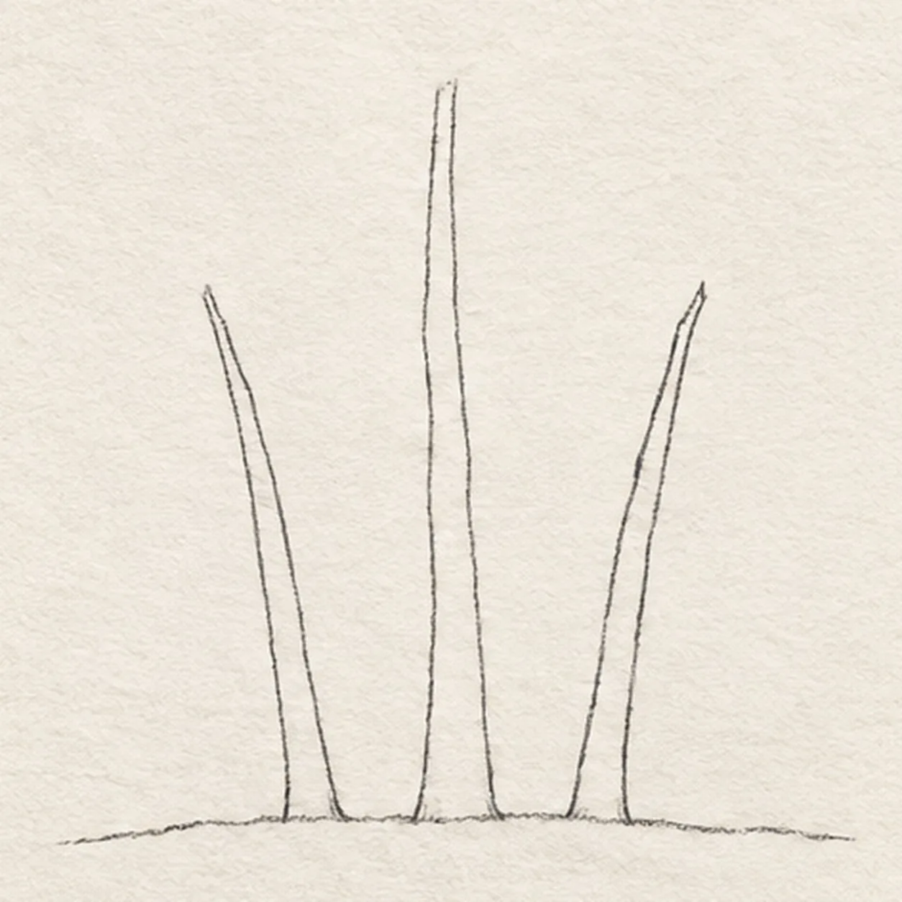
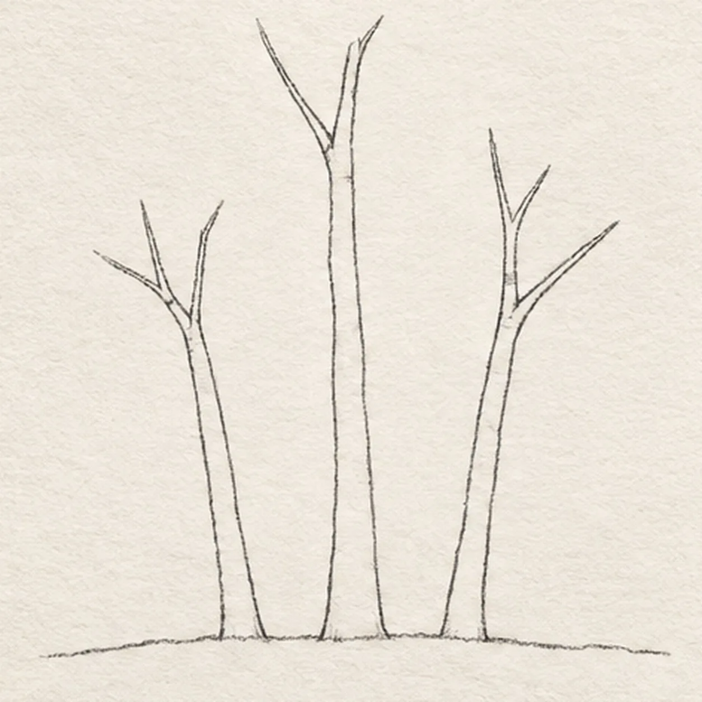
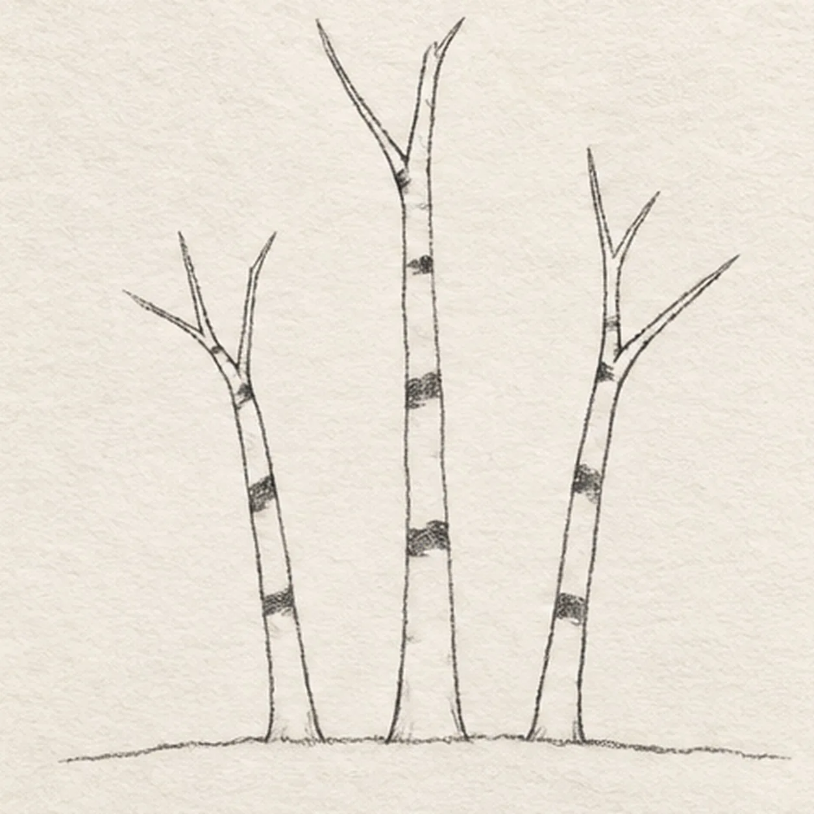
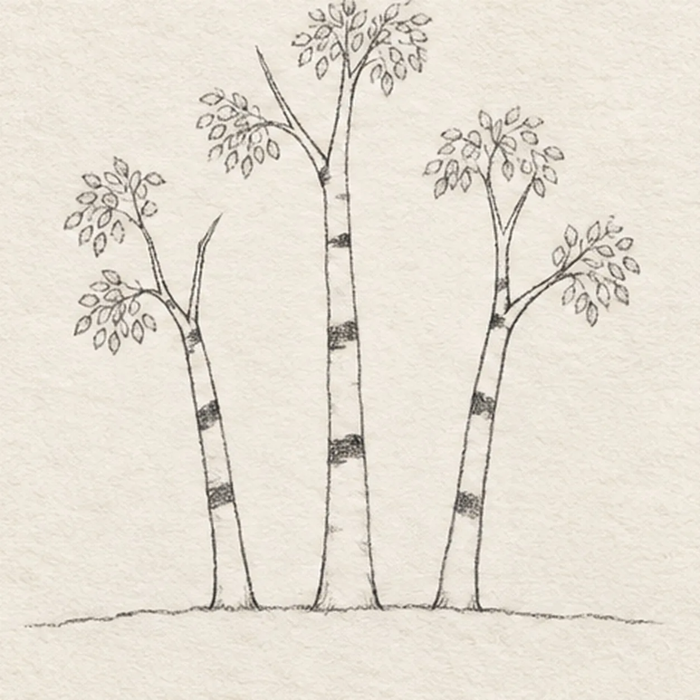
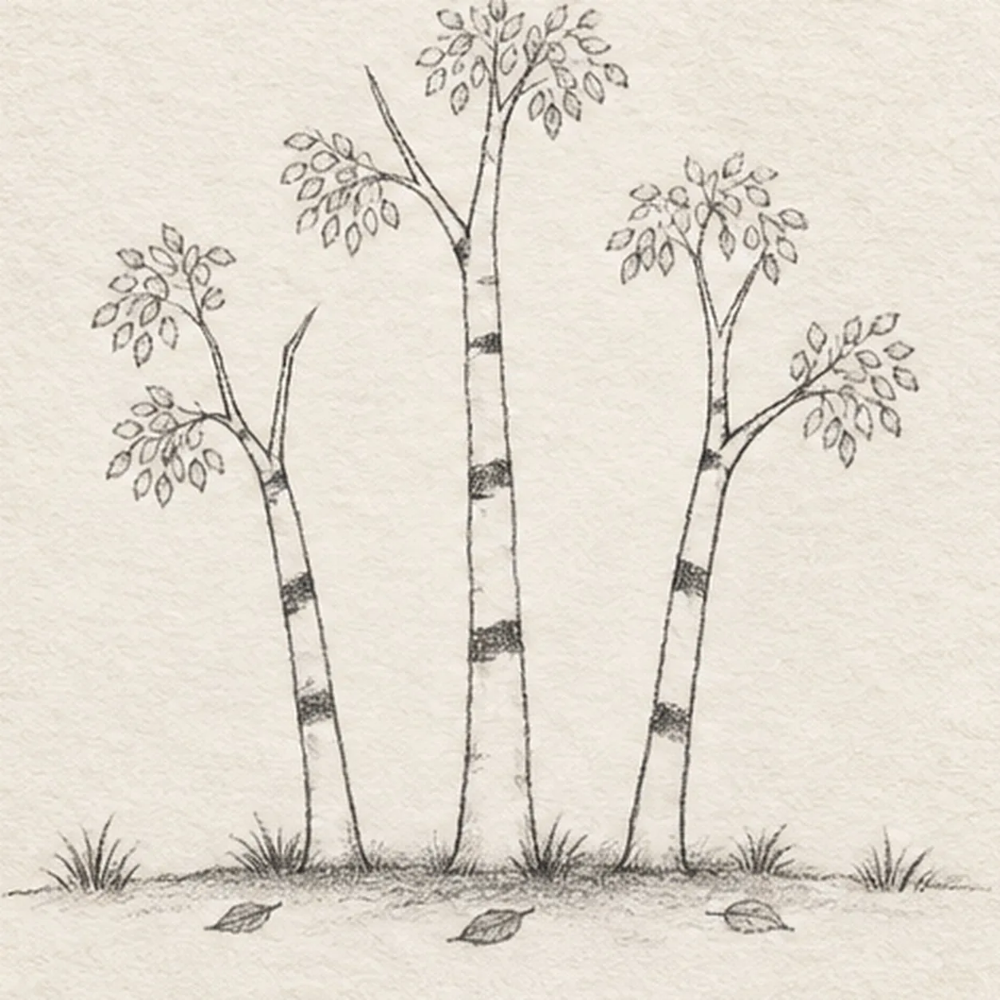

From the archive
Let's draw an autumn birch tree
Treat this as one small practice round: build the subject lightly, notice the shapes, then darken only the lines that help the finished sketch.
-
01

Set the three trunks
Draw exactly three slender trunk ribbons rising from one broken ground line, keeping the center trunk tallest and letting the outer trunks lean slightly away.
Sketch tip: Begin with the ground line, then compare all six trunk edges before adding branches. Leave generous sky gaps between the three ribbons.
-
02

Fork the branches
Attach two upward branch forks to each of the three trunks without moving their bases or outer edges.
Sketch tip: Join every fork cleanly to a trunk edge and aim the tips upward. Keep the center crown highest and count six main forks before moving on.
-
03

Break up the birch bark
Add exactly three broken dark bark bands across each pale trunk and a few small notches where branches join.
Sketch tip: Stop each uneven band before it spans the full trunk. Count three bands per tree and leave most of the bark as open paper.
-
04

Gather six leaf clusters
Attach exactly six loose oval leaf clusters around the branch tips, distributing two airy clusters on each tree.
Sketch tip: Build each cluster from overlapping leaf shapes, but leave little windows of sky. Count two clusters per tree so the grove stays balanced.
-
05

Settle the autumn ground
Add exactly six small grass tufts, exactly three fallen leaves, and one broken shadow beneath the established grove.
Sketch tip: Scatter the tufts along the ground line and place the three fallen leaves between the trunks. Keep the graphite shadow light and broken.
-
06

Layer the autumn color
Add golden yellow, ochre, rust, cool gray, and graphite value only within the established leaves, bark marks, and ground.
Sketch tip: Keep the trunks mostly paper white. Layer color lightly through the six clusters and three fallen leaves, deepen the existing shadow, and add no new contours.


![Handmade graphite and restrained colored-pencil sketch of one left-facing pirate sailing ship with one warm-brown curved wooden hull, one blank stern cabin, one center mast, exactly two square cool-gray sails with two curved seams each, one forked muted-red pennant, one diagonal bowsprit, exactly three taut rigging lines, exactly three round hull portholes, exactly three broken desaturated-blue wave bands, exactly two cool-gray cloud wisps, exactly two open-paper sail highlights, and visible paper tooth](../assets/pirate-sailing-ship-at-sea-finished-v1.webp)